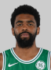
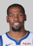
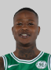

CELTICS
Recent Matches

40 min
32 pts
10 ast
6 reb

39 min
33 pts
3 ast
9 reb
- Kevin Durant led all scorers with 33 points.
- Kyrie Irving was right behind him with 32 points to lead Boston.
- Irving also led the game with 10 assists.
- The game was so tight that neither team led by double-digits at any points.
- Jaylen Brown led all reserves with 10 points.
- Golden State grabbed the win in large part due to the free-throw line, where they outscored Boston 29-14.
- The Celtics scored 23 points off of 15 offensive rebounds.
- Jayson Tatum scored 20 points for Boston.
- Stephen Curry shot 6-for-12 from 3-point range and scored 24 points.
- Al Horford stuffed the stat sheet with 22 points, 13 rebounds, three assists, two blocked shots and a steal.
- Draymond Green and DeMarcus Cousins, who grabbed three steals apiece, combined to grab as many steals as Boston's entire team (six).
- Kevon Looney finished with the best plus/minus rating of the game at plus-13.
- Both teams scored at least 25 points during every quarter of the game.
VS

W
123-103

30 min
26 pts
6 ast
8 reb
22 min
14 pts
1 ast
0 reb
- Four Celtics scored at least 17 points, led by a season-high 26 from Terry Rozier.
- Marcus Smart, Aron Baynes and Marcus Morris, three of Boston's starters, each finished with a plus-14 in the plus/minus category.
- No player in the game grabbed more than nine rebounds.
- Boston scored a whopping 64 points in the paint.
- Boston's bench outscored Cleveland's by a count of 60-30.
- Jaylen Brown came off the bench to score 23 points.
- Cedi Osman led Cleveland with 25 points.
- The Celtics outscored the Cavs by 25 points while Collin Sexton, Cleveland's starting point guard, was on the floor.
- Robert Williams blocked a game-high three shots in just 13-plus minutes of action.
- Boston shot 21-for-23 from the free-throw line.
- Brad Wanamaker came off the bench to score 11 points in 20-plus minutes of action.
- Jayson Tatum grabbed a game-high three steals.
- Ante Zizic tallied 19 points and eight rebounds for Cleveland.
34 min
26 pts
8 ast
3 reb
31 min
11 pts
3 ast
1 reb
- Four of Boston's five starters scored at least 16 points, led by Kyrie Irving's game-high 26.
- Irving grabbed a career-high eight steals, and also dished out a game-high 10 assists.
- Miami's bench outscored Boston's 66-23.
- Dion Waiters and Derrick Jones Jr., two reserves, led Miami with 18 points apiece.
- Both teams committed 19 turnovers.
- Four Celtics made at least two 3-poiners.
- All five Celtics starters finished with plus/minus ratings of at least plus-16.
- Both teams scored 17 fast break points.
- Boston led by as many as 22 points.
- The Celtics had the game's top scorer (Irving, 26 points), assist man (Irving, 10 assists) and rebounder (Horford, 12 rebounds).
Back to home